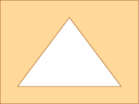
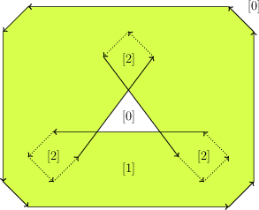
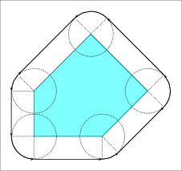
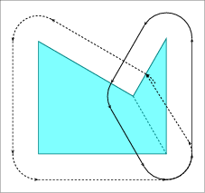
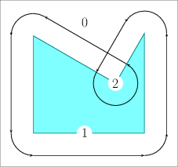

|
CGAL 4.13 - 2D Minkowski Sums
|
|
CGAL 4.13 - 2D Minkowski Sums
|
Given two sets \( A,B \in \mathbb{R}^d\), their Minkowski sum, denoted by \( A \oplus B\), is their point-wise sum, namely the set \( \left\{ a + b ~|~ a \in A, b \in B \right\}\). Minkowski sums are used in many applications, such as motion planning and computer-aided design and manufacturing. This package contains functions that compute the planar Minkowski sums of two polygons. (Here, \( A\) and \( B\) are two closed polygons in \( \mathbb{R}^2\), which may have holes; see Chapter 2D Regularized Boolean Set-Operations for the precise definition of valid polygons), and the planar Minkowski sum of a simple polygon and a disc—an operation also referred to as offsetting or dilating a polygon.The family of valid types of summands is slightly broader for certain operations, e.g., a degenerate polygon consisting of line segments is a valid operand for the approximate-offsetting operation. This package, like the 2D Regularized Boolean Set-Operations package, is implemented on top of the arrangement infrastructure provided by the 2D Arrangements package. The two packages are integrated well to allow mixed operations. For example, it is possible to apply Boolean set operations on objects that are the result of Minkowski sum computations.The operands of the Minkowski sum operations supported by this package must be (linear) polygons, as opposed to the operands of the Boolean set operations supported by the 2D Regularized Boolean Set-Operations package. The latter belong to the broader family of general polygons.
Computing the Minkowski sum of two convex polygons \( P\) and \( Q\) with \( m\) and \( n\) vertices, respectively, is rather easy. Observe that \( P \oplus Q\) is a convex polygon bounded by copies of the \( m + n\) edges ordered according to the angle they form with the \( x\)-axis. As the two input polygons are convex, their edges are already sorted by the angle they form with the \( x\)-axis; see the figure above. The Minkowski sum can therefore be computed using an operation similar to the merge step of the merge-sort algorithmSee, for example, http://en.wikipedia.org/wiki/Merge_sort. in \( O(m + n)\) time, starting from the two bottommost vertices in \( P\) and in \( Q\) and merging the ordered list of edges.

|

|
If the polygons are not convex, you can utilize either the Decomposition or the Convolution approaches described below. Applications of some of the operations in this package are restricted to polygons that do not contain holes. (Resulting sums may contain holes though.)
We decompose \( P\) and \( Q\) into convex sub-polygons. Namely, we obtain two sets of convex polygons \( P_1, \ldots, P_k\) and \( Q_1, \ldots, Q_\ell\), such that \( \bigcup_{i = 1}^{k}{P_i} = P\) and \( \bigcup_{i = j}^{\ell}{Q_j} = Q\). We then calculate the pairwise sums \( S_{ij} = P_i \oplus Q_j\) using the simple procedure described above, and finally compute the union \( P \oplus Q = \bigcup_{ij}{S_{ij}}\); see Union Functions.
This approach relies on a successful decomposition of the input polygons into convex pieces, and its performance depends on the quality and performance of the decomposition. Some of the supplied decomposition methods do not handle polygons that contain holes.
Let \( P = \left( p_0, \ldots, p_{m-1} \right)\) and \( Q = \left(q_0, \ldots, q_{n-1} \right)\) denote the vertices of the input polygons. We assume that both \( P\) and \( Q\) have positive orientations (i.e., their boundaries wind in a counterclockwise order around their interiors). The convolution of these two polygons [7], denoted \( P * Q\), is a collection of line segments of the form \( [p_i + q_j, p_{i+1} + q_j]\),Throughout this chapter, we increment or decrement an index of a vertex modulo the size of the polygon. where the vector \( {\mathbf{p_i p_{i+1}}}\) lies between \( {\mathbf{q_{j-1} q_j}}\) and \( {\mathbf{q_j q_{j+1}}}\),We say that a vector \( {\mathbf v}\) lies between two vectors \( {\mathbf u}\) and \( {\mathbf w}\) if we reach \( {\mathbf v}\) strictly before reaching \( {\mathbf w}\) if we move all three vectors to the origin and rotate \( {\mathbf u}\) counterclockwise. Note that this also covers the case where \( {\mathbf u}\) has the same direction as \( {\mathbf v}\). and, symmetrically, of segments of the form \( [p_i + q_j, p_i + q_{j+1}]\), where the vector \( {\mathbf{q_j q_{j+1}}}\) lies between \( {\mathbf{p_{i-1} p_i}}\) and \( {\mathbf{p_i p_{i+1}}}\).
The segments of the convolution form a number of closed (not necessarily simple) polygonal curves called convolution cycles. The Minkowski sum \( P \oplus Q\) is the set of points having a non-zero winding number with respect to the cycles of \( P * Q\).Informally speaking, the winding number of a point \( p \in\mathbb{R}^2\) with respect to some planar curve \( \gamma\) is an integer number counting how many times does \( \gamma\) wind in a counterclockwise direction around \( p\). See Figure 21.2 for an illustration.
We construct the arrangement induced by the convolution cycles of \(P \) and \(Q \), then compute the winding numbers of the cells of the arrangement. Finally, we extract the Minkowski sum from the arrangement. This variant is referred to as the full-convolution method.
A segment \([p_i + q_j, p_{i+1} + q_j] \) (resp. \([p_i + q_j, p_i + q_{j+1}] \)) cannot possibly contribute to the boundary of the Minkowski sum if \(q_j \) (resp. \(p_i \)) is a reflex vertex (see dotted edges in Figure 21.2). The remaining subset of convolution segments is called the reduced convolution [3]. This subset is still a superset of the Minkowski sum boundary, but the winding number property does not apply any longer as there are no closed cycles anymore. We apply two different filters, which identify holes in the Minkowski sum:
After applying these two filters, only those segments which constitute the Minkowski sum boundary remain. This variant is referred to as the reduced-convolution method.
The number of segments in the convolution of two polygons is usually smaller than the number of segments that constitute the boundaries of the sub-sums \( S_{ij}\) when using the decomposition approach. As both approaches construct the arrangement of these segments and extract the sum from this arrangement, computing Minkowski sum using the convolution approach usually generates a smaller intermediate arrangement; hence it is faster and consumes less space. In most cases, the reduced convolution method is faster than the full convolution method, as the respective induced arrangement is usually much smaller. However, in degenerate cases with many holes in the Minkowski sum, the full convolution method can be preferable, as it avoids costly intersection tests.
If a hole in one polygon is relatively small compared to the other polygon, the hole is irrelevant for the computation of \(P\oplus Q \) [2]; It implies that the hole can be removed (that is, filled up) before the main computation starts. Theoretically, we can always fill up all the holes of at least one polygon, transforming it into a simple polygon, and still obtain exactly the same Minkowski sum. Practically, we remove all holes in one polygon whose bounding boxes are, in \(x \)- or \(y \)-direction, smaller than, or as large as, the bounding box of the other polygon. Obliterating holes in the input summands speeds up the computation of Minkowski sums, regardless of the approach used to compute the Minkowski sum.
The function template minkowski_sum_2(P, Q) accepts two polygons \( P\) and \( Q\) and computes their Minkowski sum \( S = P \oplus Q\) using the convolution approach. The call minkowski_sum_2(P, Q) defaults to the call minkowski_sum_by_reduced_convolution_2(P, Q), which applies the reduced convolution aforementioned method. Explicitly call minkowski_sum_by_full_convolution_2(P, Q) to apply the full convolution method. The types of the operands accepted by the function minkowski_sum_by_full_convolution_2(P, Q) are instances of the Polygon_2 class template. The types of operands accepted by the function minkowski_sum_by_reduced_convolution_2(P, Q) (and by the function minkowski_sum_2(P, Q)) are instances of either the Polygon_2 or Polygon_with_holes_2 class templates. Even when the input polygons are restricted to be simple polygons, they still may not be convex; thus, their Minkowski sum may not be simply connected and may contain polygonal holes; see for example Figure 21.2. The type of the returned object \( S \) is therefore an instance of the Polygon_with_holes_2 class template in all cases. Recall that the outer boundary of \(S \) is a polygon that can be accessed using S.outer_boundary(), and its polygonal holes are given by the range [S.holes_begin(), S.holes_end()) (where \( S \) contains S.number_of_holes() holes in its interior).
The example program below constructs the Minkowski sum of a triangle and a square, as depicted in Figure 21.3. The result in this case is a convex hexagon. This program, like other example programs in this package, includes the header file bops_linear.h, which defines the polygon types.
File Minkowski_sum_2/sum_triangle_square.cpp
The program below computes the Minkowski sum of two polygons that are read from an input file. In this case the sum may contain holes. The Minkowski sum, for example, of the polygons described in the default input file room_star.dat is not simple and contains four holes, as illustrated in Figure Figure 21.4.
File Minkowski_sum_2/sum_with_holes.cpp
While in general the convolution approach to computing Minkowski sums runs faster, we observed that when the proportion of reflex vertices in both summands is large, the decomposition approach runs faster. In the following we describe how to employ the decomposition-based Minkowski sum procedure.
In order to compute Minkowski sums of two polygon \( P \) and \( Q \) using the decomposition method, issue the call minkowski_sum_2(P, Q, decompP, decompQ), where each of \(P \) and \(Q \) is either a simple polygon or a polygon with holes. If \(P \) is a simple polygon, decompP must be an object of a type that models the concept PolygonConvexDecomposition_2. If \(P \) is a polygon with holes, them decompP is an object of a type that models the concept PolygonWithHolesConvexDecomposition_2, which refines the concept PolygonConvexDecomposition_2. The same holds for \(Q \). The two concepts PolygonConvexDecomposition_2 and PolygonWithHolesConvexDecomposition_2 refine a Functor concept variant. Namely, they both require the provision of a function operator (operator()). The function operator of the model of the concept PolygonConvexDecomposition_2 accepts a planar simple polygon, while the function operator of the model of the concept PolygonWithHolesConvexDecomposition_2 accepts a planar polygon with holes. Both return a range of convex polygons that represents the convex decomposition of the input polygon. If the decomposition strategy that decomposes \(P \) is the same as the strategy that decomposes \(Q \), you can omit the forth argument, and issue the call minkowski_sum_2(P, Q, decomp), where decomp is an object that represents the common strategy. The class template Polygon_nop_decomposition_2, which models the concept PolygonConvexDecomposition_2, is a trivial convex decomposition strategy referred to as the nop strategy; it merely passes the input polygon to the next stage intact; use it in cases you know that the corresponding input polygon is convex to start with. If both \(P \) and \(Q \) are known to be convex, you can issue the call minkowski_sum_2(P, Q, nop), where nop is an object that represents the nop strategy.
The Minkowski-sum package includes four models of the concept PolygonConvexDecomposition_2 (besides the trivial model Polygon_nop_decomposition_2) and two models of the refined concept PolygonWithHolesConvexDecomposition_2 as described below. The first three are class templates that wrap the corresponding decomposition functions included in the Planar Polygon Partitioning package.
The Optimal_convex_decomposition_2<Kernel> class template uses the dynamic-programming algorithm of Greene [6] for computing an optimal decomposition of a polygon into a minimal number of convex sub-polygons. While this algorithm results in a small number of convex polygons, it consumes rather many resources, as it runs in \( O(n^4) \) time and \( O(n^3) \) space in the worst case, where \( n \) is the number of vertices in the input polygon.
The Hertel_Mehlhorn_convex_decomposition_2<Kernel> class template implements the approximation algorithm suggested by Hertel and Mehlhorn [8], which triangulates the input polygon and then discards unnecessary triangulation edges. After triangulation (carried out by the constrained-triangulation procedure of CGAL) the algorithm runs in \( O(n) \) time and space, and guarantees that the number of sub-polygons it generates is not more than four times the optimum.
The Greene_convex_decomposition_2<Kernel> class template is an implementation of Greene's approximation algorithm [6], which computes a convex decomposition of the polygon based on its partitioning into \( y\)-monotone polygons. This algorithm runs in \( O(n \log n)\) time and \( O(n)\) space, and has the same guarantee on the quality of approximation as Hertel and Mehlhorn's algorithm.
Small_side_angle_bisector_decomposition_2<Kernel> class template is an implementation of a decomposition algorithm introduced in [1]. It is based on the angle-bisector decomposition method suggested by Chazelle and Dobkin [4], which runs in \( O(n^2)\) time. In addition, it applies a heuristic by Flato that reduces the number of output polygons in many common cases. The convex decompositions that it produces usually yield efficient running times for Minkowski sum computations. It starts by examining each pair of reflex vertices in the input polygon, such that the entire interior of the diagonal connecting these vertices is contained in the polygon. Out of all available pairs, the vertices \( p_i\) and \( p_j\) are selected, such that the number of reflex vertices encountered when traversing the boundary of the polygon from \( p_i\) to \( p_j\) in clockwise order is minimal. The polygon is split by the diagonal \( p_i p_j\). This process is repeated recursively on both resulting sub-polygons. In case it is not possible to eliminate two reflex vertices at once any more, each reflex vertex is eliminated by a diagonal that is closest to the angle bisector emanating from this vertex and having rational-coordinate endpoints on both sides. The following are two models of the refined concept PolygonWithHolesConvexDecomposition_2. An instance of any one these two types can be used to decompose a polygon with holes.
The Polygon_vertical_decomposition_2<Kernel> class template uses vertical decomposition to decompose the underlying arrangement; see 2D Arrangements package.
Polygon_triangulation_decomposition_2<Kernel> class template uses constrained triangulation to decompose the input polygons, which may have holes, into triangles. The example below demonstrates the computation of the Minkowski sum of the same input polygons used in Minkowski_sum_2/sum_with_holes.cpp (depicted in Figure Figure 21.4), using the small-side angle-bisector decomposition strategy.
File Minkowski_sum_2/sum_by_decomposition.cpp
Decomposition methods that handle polygons with holes are typically more costly than decomposition methods that handle only simple polygons. The hole filtration (see Filtering Out Holes) is applied before the actual construction starts (be it convolution based or decomposition based). The filteration may result with a polygon that does not have holes, or even a convex polygon, but this is unkown at the time of the call. To this end, we introduce the overloaded function template minkowski_sum_by_decomposition_2(P, Q, no_holes_decomp, with_holes_decomp), where no_holes_decomp and with_holes_decomp are objects that model the concepts PolygonConvexDecomposition_2 and PolygonWithHolesConvexDecomposition_2, respectively. If after the application of the hole filtration \(P\) remains a polygon with holes, then the strategy represented by the object with_holes_decomp is applied to it. If, however, \(P\) turns into a polygon without holes, then the strategy represented by the object no_holes_decomp is applied to it, unless the result is a convex polygon, in which case the nop strategy is applied. If \(P\) is a polygon without holes to start with, then only convexity is checked. (Checking whether the result is convex inccurs a small overhead though.) The same holds for \(Q\).
The operation of computing the Minkowski sum \( P \oplus B_r\) of a polygon \( P\) with a disc \( b_r\) of radius \( r\) centered at the origin is widely known as offsetting the polygon \( P\) by a radius \( r\).

|

|

|
| (a) | (b) | (c) |
Let \( P \) be a simple polygon, and let \( p_0, \ldots, p_{n - 1} \) be the vertices of \( P \) oriented counterclockwise around the interior of \( P \). If \( P\) is a convex polygon the offset is easily computed by shifting each polygon edge by \( r\) away from the polygon, namely to the right side of the edge. As a result we obtain a collection of \( n\) disconnected offset edges. Each pair of adjacent offset edges, induced by \( p_{i-1} p_i\) and \( p_i p_{i+1}\), are connected by a circular arc of radius \( r\), whose supporting circle is centered at \( p_i\). The angle that defines such a circular arc equals \( 180^{\circ} - \angle (p_{i-1}, p_i, p_{i+1})\); see Figure 21.5 (a) for an illustration. The running time of this simple process is naturally linear with respect to the size of the polygon.
If \( P\) is not convex, its offset can be obtained by decomposing it into convex sub-polygons \( P_1, \ldots P_m\) such that \( \bigcup_{i=1}^{m}{P_i} = P\), computing the offset of each sub-polygon, and finally calculating the union of these offsets sub-polygons; see Figure 21.5 (b). However, as with the case of the Minkowski sum of a pair of polygons, it is also more efficient to compute the convolution cycle of the polygon and the disc \( B_r\),As the disc is convex, it is guaranteed that the convolution curve comprises a single cycle. which can be constructed by applying the process described in the previous paragraph for convex polygons: The only difference is that a circular arc induced by a reflex vertex \( p_i\) is defined by an angle \( 180^{\circ} + \measuredangle p_{i-1} p_i p_{i+1}\); see Figure 21.5 (c) for an illustration. Recall that the last step consists of computing the winding numbers of the faces of the arrangement induced by the convolution cycle and discarding the faces with zero winding numbers.
Let \( P \) be a counterclockwise-oriented simple polygon all vertices of which \( p_0, \ldots, p_{n-1} \) have rational coordinates, i.e., for each vertex \( p_i = (x_i, y_i)\) we have \( x_i, y_i \in {\mathbb Q}\). Consider the Minkowski sum of \( P \) with a disc of radius \( r\), where \( r\) is also a rational number. The boundary of this sum is comprised line segments and circular arcs, where:
Each line segment is supported by a line parallel to a polygon edge \( p_i p_{i+1}\) at distance \( r\) from this edge. Let \( A, B, C \in {\mathbb Q}\) denote the coefficients of the equation \( p_i p_{i+1}\) by \( Ax + By + C = 0 \) of the supporting line of \( p_i p_{i+1} \).
The locus of all points that lie at distance \(r \) from the line \( Ax + By + C = 0 \) is given by:
\[ \frac{(Ax + By + C)^2}{A^2 + B^2} = r^2 \ .\]
Thus, the linear offset edges are segments of an algebraic curve of degree \( 2 \) (a conic curve) with rational coefficients. This curve is actually a pair of the parallel lines \( Ax + By + (C \pm r \cdot \sqrt{A/B+1}) = 0 \). The offset edge is supported by the line \( Ax + By + C' = 0 \), where \( C' = C + r \cdot \sqrt{A/B+1} \) is in general not a rational number. Therefore, the line segments that compose the offset boundaries cannot be represented as segments of lines with rational coefficients. In Section Computing the Exact Offset we use the line-pair representation to construct the offset polygonin an exact manner using the traits class for conic arcs.
The class-template Gps_circle_segment_traits_2<Kernel>, included in the Boolean Set-Operations package, is used for representing generalized polygons the edges of which are circular arcs or line segments, and for applying Boolean set operations (e.g., intersection and union) on such generalized polygons. When it is instantiated, the template parameter 'Kernel' must be substituted with a geometric kernel that employs exact rational arithmetic. The curves that compose the polygon edges should are then arcs of circles with rational coefficients or segments of lines with rational coefficients. However, the line segments that result from the (exact) offsetting operation may be irrational. As we still wish to use the polygons defined by the Gps_circle_segment_traits_2 class template to compute Boolean set operations more efficiently, we apply a simple approximation scheme such that each irrational line segment is approximated by two rational segments.
Consider the example depicted in Figure Figure 21.6, where the exact offset edge \( o_1 o_2\) is obtained by shifting the polygon edge \( p_1 p_2\) by a vector of length \( r\) that forms an angle \( \phi\) with the \( x\)-axis. We select two points \( o'_1\) and \( o'_2\) with rational coordinates that lie on the two circles of radius \( r \) centered at \( p_1\) and \( p_2\), respectively. These points are selected such that \( \phi'_1 < \phi < \phi'_2 \), where \( \phi'_j, j = 1,2 \) is the angle that the vector \( \overrightarrow{p_j o_j} \) forms with the $x$-axis. Then, we construct two tangents to the two circles at \( o'_1\) and \( o'_2\), respectively. The tangent lines have rational coefficients. Finally, we compute the intersection point of the two tangents, denoted by \( q'\). The two line segments \( o'_1 q'\) and \( q' o'_2\) approximate the original offset edge \( o_1 o_2\).
The approximated_offset_2(P, r, epsilon) function template accepts a polygon \( P\) that is either simple or degenerate (consisting of two points only), an offset radius \( r\), and (a floating-point number) \( \epsilon > 0 \). It constructs an approximation of the offset of \( P\) by the radius \( r\) using the procedure described above. Furthermore, it is guaranteed that the approximation error, namely the distance of the point \( q'\) from \( o_1 o_2\), is bounded by \( \epsilon \). Using this function, it is possible to use the Gps_circle_segment_traits_2<Kernel> class template, which considerably speeds up the (approximate) construction of the offset polygon and the application of Boolean set operations on such polygons; see Section A Traits Class for Circular Arcs and Line Segments for the exploitation of the efficient square root extension number type. The function returns an object of the nested type Gps_circle_segment_traits_2::Polygon_with_holes_2 representing the approximated offset polygon. Recall that if \( P\) is not convex, its offset may not be simple and may contain holes, the boundaries of which are also formed by line segments and circular arcs.
The example below demonstrates the construction of an approximated offset of a non-convex polygon, as depicted in Figure Figure 21.7. The program uses types defined in the header file bops_circular.h, which defines the polygon types.
File Minkowski_sum_2/approx_offset.cpp
As mentioned in the previous section, it is possible to represent offset polygons in an exact manner if the edges of the polygons are represented as arcs of conic curves with rational coefficients. The offset_polygon_2(P, r, traits) function template computes the offset of a given polygon \( P\) by a rational radius \( r\) in an exact manner. The input polygon \( P\) must be either simple or degenerate consisting of two vertices (representing a line segment). The traits argument must model the concept ArrangementTraits_2 and it should be capable of handling conic arcs in an exact manner—using an instance of the Arr_conic_traits_2 class template with the number types provided by the Core library is the preferred option; see A Traits Class for Conic Arcs for more details. The function template returns an object of the nested type Gps_traits_2::Polygons_with_holes_2 (see General Polygon Set Traits Adapter for more details on the traits-class adaptor Gps_traits_2), which represents the exact offset polygon.
The following example demonstrates the construction of the offset of the same polygon that serves as an input for the example program Minkowski_sum_2/approx_offset.cpp, presented in the previous subsection (see also Figure 21.7). Note that the resulting polygon is smaller than the one generated by the approximated-offset function (recall that each irrational line segment in this case is approximated by two rational line segments), but the offset computation is considerably slower:
File Minkowski_sum_2/exact_offset.cpp
Both functions templates approximated_offset_2() and offset_polygon_2() also have overloaded versions that accept a decomposition strategy and use the polygon-decomposition approach to compute (or approximate) the offset. These functions are typically considerably slower than their counterparts that employ the convolution approach. However, similar to the functions that compute the general Minkowski sum, they are able to compute the offset of polygons with holes, given a decomposition strategy that handles polygons with holes, such as the Polygon_vertical_decomposition_2<Kernel> class template.
An operation closely related to the (outer) offset computation, is computing the inner offset of a polygon, or insetting it by a given radius. The inset of a polygon \( P\) with radius \( r\) is the set of points iside \( P\) the distance of which from the polygon boundary, denoted \( \partial P\), is at least \( r\), namely: \( \{ p \in P \;|\; {\rm dist}(p, \partial P) \geq r \}\). Note that the resulting point set may be dicconnected when \( P\) is a non-convex polygon that has some narrow components. In such a case the resulting set is characterized by a (possibly empty) set of polygons the edges of which are line segments and circular arcs of radius \( r\).
The inset can be computed using the convolution method traversing the polygon in a clockwise order (as oppose to the counterclockwise order applied in the case of ofsetting a polygon). As with the (outer) offset functions, the Minkowski-sum package contains two functions for insetting a simple polygon, namely, approximated_inset_2(P, r, eps, oi) and inset_polygon_2(P, r, traits, oi).
The approximated_inset_2(P, r, eps, oi) function template accepts a polygon \( P\), an inset radius \( r\), (a floating-point number) \( \epsilon > 0 \), and an output iterator oi, whose value-type must be an instance of the class template Gps_circle_segment_traits_2::Polygon_2. . It constructs an approximation of the inset of \( P\) by the radius \( r\), where the approximation error is bounded by \( \epsilon\). The function returns the polygons that approximate the inset polygon through the output iterator oi.
File Minkowski_sum_2/approx_inset.cpp
Similarly, the function template inset_polygon_2(P, r, traits, oi) computes the exact inset of \( P\) with radius \( r\), and returns its output through the given output iterator oi. The traits parameter must model the concept ArrangementTraits_2 and it should be capable of handling conic arcs in an exact manner, whereas the value-type of oi must be an instance of Gps_traits_2::Polygon_2.
File Minkowski_sum_2/exact_inset.cpp
Unlike the functions that compute the offsets, there are no overloaded versions of the functions that compute the insets and use convex polygon decomposition, as decomposition approach cannot be easily generalized for inset computations.
The package also provides overloaded versions of the functions approximated_offset_2(P, r, eps) and offset_polygon_2(P, r, traits) that accept a polygon with holes \( P\) and compute its offset. This ofset is obtain by computing the outer offset of the outer boundary of \( P\)'s, and computing the inner offsets of the holes of \( P\). The former polygon defines the output boundary of \( P \oplus B_r\), and the latter define the holes within the result.
Eyal flato set the ground for the this package around the end of the previous millennium with his research work about Minkowski sum construction using the decomposition approach. However, it was only a few years later when Ron Wein developed the first version of this package, which was introduced with release 3.3. The first version of the package contained functionality for computeing the Minkowski sum of two polygons, computing the offset of a polygon by a disk, and approximating the offset of a polygon by a disk. Release 3.4 contained an enhancement of the offset computation, which allowed for polygon with holes as operands. Release 3.4 also featured new functionality for computing the inner offset of a polygon and approximating the inner offset. All this was also developed by Ron Wein. Release 3.7 contained an enhancement of the offset approximation for degenerate polygons such as line segments. This enhancement was developed by Efi Fogel, who also developed a new decomposition strategy, which can handle polygons with holes, essentially enabling the computation of Minkowski sum of two polygons with holes using the decomposition approach. The later was introduced with release 4.6. Ron Wein, Efi Fogel, Ophir Setter, Andreas Fabri, and Laurent Rineau helped maintaining the package applying bug fixes and other improvements. In particular, Andreas Fabri and Laurent Rineau helped tracing and solving several bugs in the approximated offset computation. They have also suggested a few algorithmic improvements that made their way into version 3.4, yielding a faster approximation scheme. During the Google Summer of Code 2014, Sebastian Morr, mentored by Michael Hemmer, implemented the reduced convolution approach, based on Alon Baram's master's thesis.
 1.8.13
1.8.13